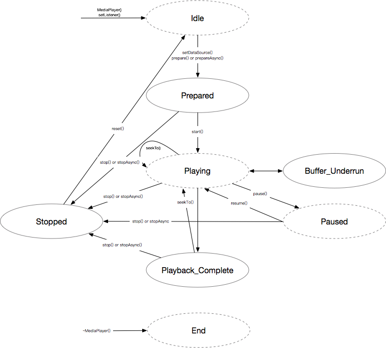

1. RPlayer
1.1. 简介
RPlayer 基于 ffplay 实现而成，主要使用了 ffmpeg 和 SDL 库，用于本地和流媒体音频播放.
1.2. 目录结构
- docs
用户使用文档
- include
开放头文件
- sample
示例代码
- src
源代码
- test
测试代码
1.3. 状态图
RPlayer 使用状态机控制整个播放过程。用户可以调用公开接口触发状态变化，然后 RPlayer 会调用回调接口通知用户当前的状态。 因此用户在初始化阶段需要注册回调函数用于接收状态变化事件进而操作 RPlayer。 下图所示为RPlayer 的状态变化图。椭圆代表了 RPlayer 的状态，其中实线椭圆代表RPlayer 变化到当前状态时会触发回调通用用户。箭头代表用户可以调用这些方法触发状态变化。

Idle state 当创建 MediaPlayer 或 MediaPlayer 被 stop() 或 reset() 后，RPlayer 处于空闲状态。在该状态下，不建议使用 get 或者 set 相关的接口。而且强烈建议用户在初始化 MediaPlayer 后调用 setListener() 注册回调函数。
Prepared state 当prepare() 或者 prepareAsync() 被调用后，RPlayer 完成内部资源和线程的初始化后会进入 Prepared 状态。其中 Ffmpeg 和 SDL 相关的初始化比较耗时。如果初始化成功，RPlayer 会通过回调函数上报 MEDIA_PREPARED事件，否则会上报 MEDIA_ERROR 事件。需要注意的是调用 prepare() 之前必须调用 setDataSource() 设置需要播放的资源路径，否则 RPlayer 会通过回调函数上报 MEDIA_ERROR 事件。
Playing state 当用户收到 MEDIA_PREPARED 后，可以调用 start() 播放音频。在播放过程中用户也可以调用 seekTo() 查找某个位置进行播放，查找完成后 RPlayer 会发送 MEDIA_SEEK_COMPLETE 事件。
Buffer Underrun state 在弱网情况下，RPlayer 会发送 MEDIA_BUFFERING_UPDATE 事件用于表明没有 buffer 可以用来播放。
Paused state 当用户调用 pause() 函数后，RPlayer 会进入暂停状态，音频会相应的暂停。resume() 函数可用于恢复音频播放。需要注意的是，播放状态和暂停状态之间的实质切换可能并不是完全同步的，可能需要100ms左右的延时。
Playback Complete state 当音频播放完成后，RPlayer 会发送 MEDIA_PLAYBACK_COMPLETE 事件，此时用户也可通过 seekTo() 查找某个位置继续播放。
Stopped state 用户可通过 stop() 和 stopAsync() 停止音频播放，其中 stopAsync() 在完成停止后 RPlayer 会发送 MEDIA_STOPPED 事件。用户如果需要重用该 MediaPlayer，reset() 可用于恢复状态。
End ~MediaPlayer() 被调用后，之前分配的资源会被全部释放。
1.4. 多媒体事件
基于RPlayer实现的播放器需要根据以下事件切换工作流程。
- MEDIA_PREPARED
准备完成状态
- MEDIA_PLAYBACK_COMPLETE
播放完成状态
- MEDIA_BUFFERING_UPDATE
没有buffer可以用来播放
- MEDIA_SEEK_COMPLETE
位置查找完成，设备处于播放状态
- MEDIA_STOPPED
停止状态
- MEDIA_ERROR
错误状态
1.5. Public Method
MediaPlayer
- MediaPlayer()
- MediaPlayer(const char *mediaTag) 构造 MediaPlayer，其中 mediaTag 参数用于音量控制。
~MediaPlayer
- ~MediaPlayer() 析构 MediaPlayer。
prepare
- status_t prepare()
- status_t prepareAsync() 初始化 Ffmpeg 和 SDL 资源，完成后上报 MEDIA_PREPARED 事件。
setDataSource
- status_t setDataSource(const char *url) 设置需要播放的音频路径。
start
- status_t start() 启动音频播放。
pause
- status_t pause() 暂停音频播放。
resume
- status_t resume() 恢复音频播放。
stop
- status_t stop()
- status_t stopAsync() 停止音频播放并释放资源和关闭子线程。需要注意的是只有 stopAsync() 函数在完成后会上报 MEDIA_STOPPED 事件。
seekTo
- status_t seekTo(int msec) 指定播放位置，单位为 ms。 RPlayer 完成位置位置查找后会上报MEDIA_SEEK_COMPLETE 事件。
reset
- status_t reset() 当 stop() 函数被调用后，可以用该函数使得 RPlayer 进入空闲状态。
class MediaPlayerListener
class MediaPlayerListener
{
public:
virtual void notify(int msg, int ext1, int ext2, int fromThread) = 0;
};
回调函数基类 MediaPlayerListener。
setListener
- status_t setListener(MediaPlayerListener *listener) 注册回调函数 MediaPlayerListener.。
getListener
- MediaPlayerListener * getListener() 获取回调函数 MediaPlayerListener 指针。
setLooping
- status_t setLooping(int loop) 设置循环播放模式，＜=0代表非循环模式，＞0代表循环播放模式。
isLooping
- bool isLooping() 判断当前是否处在循环播放模式。
isPlaying
- bool isPlaying() 判断当前是否在播放。
getCurrentPosition
- status_t getCurrentPosition(int *msec)
- long getCurrentPosition(void) 获取当前播放的位置，单位为 ms。
getDuration
- status_t getDuration(int *msec)
- long getDuration(void) 获取当前播放音频的时长，单位为 ms。
setVolume
- status_t setVolume(float leftVolume, float rightVolume);
- int setVolume(int volume) 设置当前音量，范围为 0-100。
getVolume
- int getVolume(void) 获取当前音量